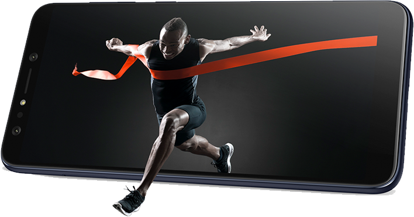

El ZenFone Selfie Pro posee un sistema de 4 cámaras de alta calidad que eleva tu experiencia fotográfica a un nivel
más alto. Con la cámara principal de alta resolución Sony® – 20MP en la parte delantera y 16MP detrás, además de la
segunda cámara gran angular con un campo de visión de 120°, tanto frontal y trasero, te dan lo mejor de todos los
mundos posibles para tu fotografía . Si amas las selfies, wefies, fotos en movimiento, retratos, paisajes o
videos de extrema calidad,
¡el ZenFone Selfie Pro es imbatible!
120°
20MB
16MB
El ZenFone Selfie Pro posee una impresionante pantalla de 6 pulgadas, pero es tan compacto como la mayoría de los smartphones de 5,5 pulgadas. En la parte frontal y posterior, los paneles de vidrio con los bordes de la cara delantera y trasera que se encuentran en la parte frontal y posterior, hace que el equipo se vea más sofisticado.
6"
18:9
El Zenfone Selfie Pro tiene un rendimiento increíble, una eficiencia de energía optimizada con una batería de 3300mAh y una conectividad avanzada, con potentes funciones de seguridad y comodidad para que su experiencia móvil no sea comparable con ninguna otra. La última Plataforma Móvil Qualcomm® Snapdragon™ con 4 GB de RAM ofrece rendimiento de CPU y GPU drásticamente más rápido para todas sus aplicaciones y juegos.
SMD630
4GB
128GB